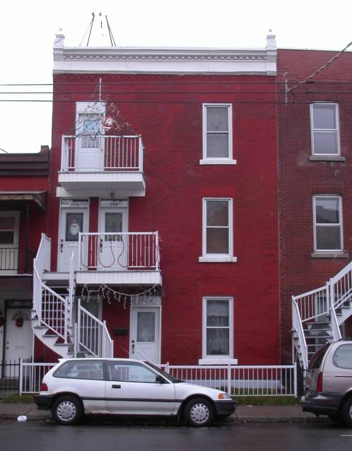
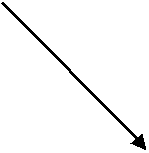
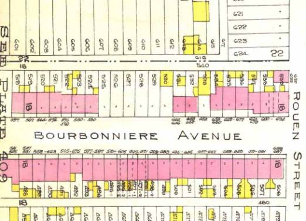
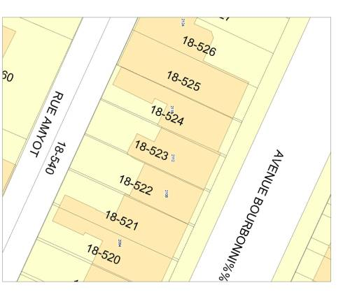
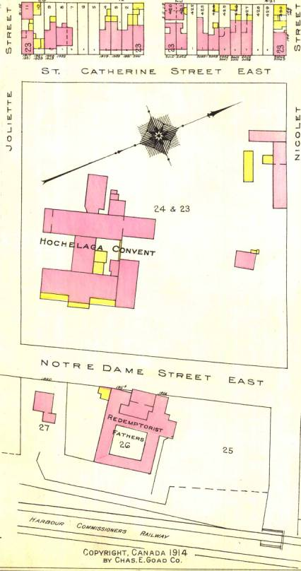
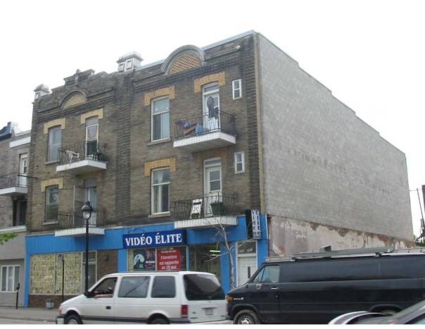
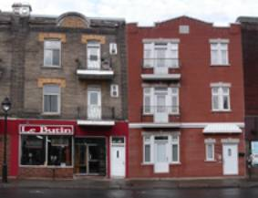

| PHOTOS
DU 580 BOURBONNIÈRE La famille d’Ézilda
habitait au rez-de-chaussée. Après leur mariage, Charles et Ézilda y
vivent quelques temps, en compagnie de la mère d’Ézilda.  Sur cette photo on remarque que la corniche, la brique, les allèges et linteaux de fenêtre en pierre avec motifs sont d’origine.

 Et sur le plan de 2005,
on note que l’adresse du 580 est devenue 2112.
 PHOTOS
DU 2055 STE-CATHERINE EST
 Quelque temps après leur mariage Charles et Ézilda déménagent au 2055 rue Ste-Catherine est. Il a été détruit vers 2004 probablement par un incendie.
Il
s’agissait du logement du troisième étage. Il faisait face au grand
parterre du couvent Hochelaga comme on peut le voir sur ce plan de 1912.
Le numéro de lot est le 23-427. On y
remarque aussi que le terrain situé à droite est vacant et que
les deux bâtisses situées sur les lots 426 et 427 semblent identiques.
Alors en regardant la photo ci-dessous tout porte à croire que le 2055
devait faire partie d’un triplet de maisons et devait donc ressembler
à ses deux voisines de gauche.
 La maison de l’extrême gauche n’a pas perdu sa corniche. Ces bâtisses sont actuellement en mauvais état mais au début du siècle elles devaient avoir fier allure. Sur le terrain vacant de droite, une bâtisse de trois logements a été érigée vers 2005, elle porte les adresses civiques 3693-3697 Ste-Catherine est.

|